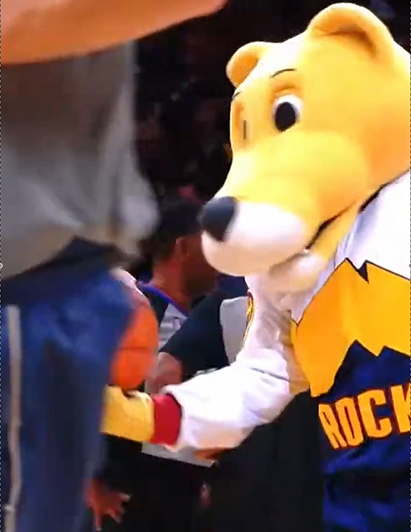
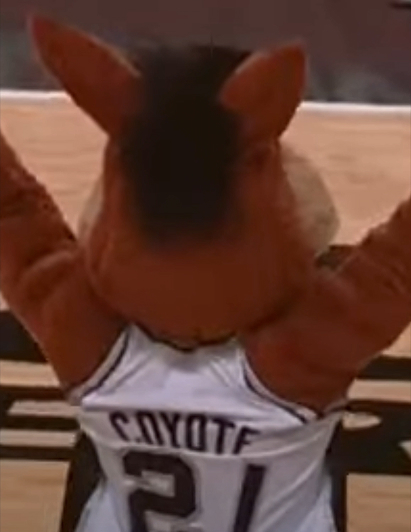
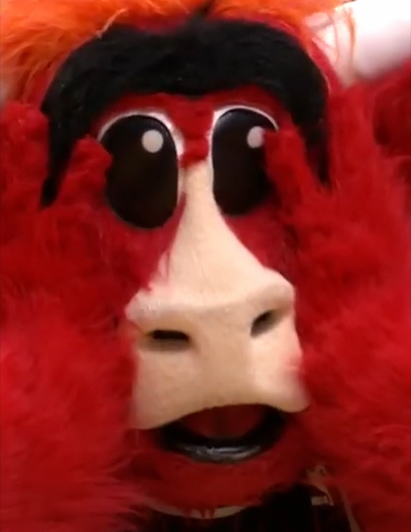
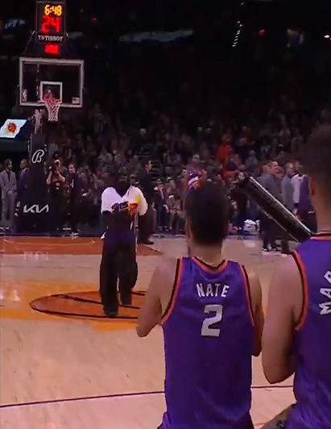
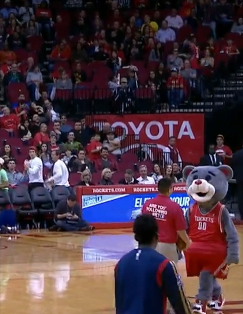

Chi sono
Mi chiamo Genrev Christian Gamiao. Sono nato nelle Filippine, ma sono cresciuto in Italia e mi sento ormai italiano. Amo la lasagna, la carbonara, il design, lo sport e la corsa.

Mi chiamo Genrev Christian Gamiao. Sono nato nelle Filippine, ma sono cresciuto in Italia e mi sento ormai italiano. Amo la lasagna, la carbonara, il design, lo sport e la corsa.
Negli ultimi mesi ho iniziato a interessarmi alle mascotte. Sono personaggi simpatici e colorati, usati spesso nello sport. Mi piacciono perché raccontano storie, emozioni e identità.
Se ti piace il design, lo sport o le mascotte, sei nel posto giusto. Qui scopri come nascono e perché piacciono. Le mascotte non sono solo costumi, ma emozioni e festa.
Questo spazio è nato per unire le mie passioni. Qui esploro, analizzo e racconto le mascotte da una prospettiva creativa, mettendo in luce il loro stile, il loro impatto nel mondo dello sport e il loro valore comunicativo.
Tanto tempo fa, le persone usavano simboli speciali. Servivano per raccontare storie, spaventare i nemici o proteggere il proprio gruppo. Questi simboli avevano un significato profondo e venivano rispettati da tutti. Con il passare degli anni, quei simboli sono cambiati. Ma la loro forza è rimasta. Oggi li vediamo anche nel mondo dello sport. Le squadre li usano per mostrare forza, coraggio e identità. Vogliono ispirare i tifosi e unire le persone sotto gli stessi colori. Così, poco a poco, sono nate le prime mascotte. All'inizio erano semplici costumi. Poi sono diventate personaggi veri e propri, pieni di energia e fantasia. Oggi le mascotte fanno parte dello spettacolo. Fanno ridere, ballano e danno vita alle partite. Ma nel profondo, portano ancora con sé l'antico potere dei simboli.
Poi sono arrivate le aziende. Anche loro volevano un personaggio che potesse parlare al pubblico, ma senza usare le parole. Un volto simpatico, facile da ricordare, capace di trasmettere emozioni. Così le mascotte sono uscite dagli stadi e hanno cominciato a vivere in tanti altri luoghi: nei negozi, nelle pubblicità, nei parchi a tema, e perfino online. Oggi le mascotte sono ovunque. Le vediamo nei video, sulle magliette, nei giochi e negli eventi. Ma non sono solo costumi o pupazzi. Sono veri personaggi, con una storia da raccontare. Ogni mascotte rappresenta qualcosa: un'idea, un'emozione, un'identità. Può far sorridere, far riflettere o far sentire parte di un gruppo. E proprio per questo continuano a essere amate da grandi e piccoli, in tutto il mondo.
Le mascotte hanno fatto un lungo viaggio nel tempo. Ogni epoca ha lasciato un segno, ogni momento ha raccontato una storia. Dal passato fino a oggi, ogni passo ha contribuito a costruire ciò che sono diventate. Non sono solo costumi colorati, sono anche personaggi con un'anima, che rappresentano qualcosa di più grande. Sono parte di storie vere, legate alla cultura, allo sport e alla fantasia. Attraverso di loro possiamo vedere come la creatività unisce le persone. Le mascotte mostrano che anche nei momenti di gioco ci sono emozioni profonde, simboli importanti e identità condivise.
Le mascot non sono solo vestiti colorati. Non stanno lì per bellezza. Sono parte dello spettacolo. Fanno ridere, coinvolgono il pubblico e creano emozione.
Le mascot uniscono le persone. Fanno divertire adulti e bambini. Rendono ogni evento più allegro e più vivo. Con loro, lo sport diventa anche una festa.
Le mascot sono artisti. Raccontano storie con i gesti. Ballano, saltano, sorprendono. A volte cadono in modo buffo. Altre volte fanno acrobazie incredibili.
Hai mai visto un gorilla che schiaccia a canestro? O un dinosauro che balla davanti a migliaia di persone? Se non lo hai ancora fatto, non preoccuparti: sta per iniziare il tuo viaggio nel mondo delle mascotte NBA!





The mountain lion
Durante le pause, le mascotte entrano in campo. Ballano, saltano e fanno ridere tutti. Rendono lo spettacolo più divertente. Il pubblico si rilassa e si diverte. Oggi, quasi tutte le squadre NBA hanno una mascotte. Questi personaggi piacciono a grandi e piccoli. Creano allegria e fanno parte dell'esperienza del basket.
Solo quattro squadre non hanno una mascotte: i Lakers, i Knicks, i Warriors e i Nets.
Sono parte dello spettacolo, proprio come le cheerleader. Fanno balli, acrobazie, scherzi e numeri divertenti. Fanno ridere il pubblico e tengono alta l'energia durante la partita. Giocano con i tifosi, lanciano gadget e si fanno fotografare con i bambini.
Oggi le mascotte sono vere star. Non sono comparse: sono atleti, attori e simboli delle squadre. Aiutano a creare entusiasmo, promuovono il marchio e attirano fan di tutte le età. Ogni squadra NBA investe su di loro: una mascotte può costare 50.000 dollari all'anno. Le più famose guadagnano molto di più, grazie a eventi e merchandising.